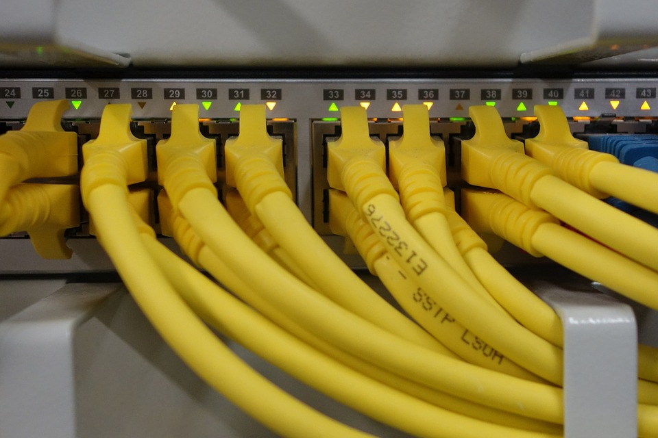

Proyectos e instalaciones
Acompañamos tus proyectos de instalaciones, ya sea en reformas, por mudanza, actualización tecnológica u obra nueva.
Instalaciones eléctricas
Desarrollo de trabajos completos, que van desde la base y el detalle, hasta las pruebas finales de la instalación, capacitación del personal y la entrega del resultado final al cliente. Este tipo de proyectos es aplicado al desarrollo de nuevos centros de cómputos, hubs o nodos. Remodelaciones y/o mudanzas IT. Teniendo ventajas en la disminución de riesgos, ahorro de tiempo, recursos y rápido desarrollo del mismo.
Redes de datos


Desarrollo y planificación de cableados estructurados de voz y datos en redes LAN / WAN sobre distintos medios, ya sean por cable UTP o enlaces inalámbricos.
Integramos tecnología orientada a redes de telecomunicaciones. Nuestro objetivo es brindar comunicaciones de avanzada y a medida, respaldadas por la calidad y excelencia de nuestros profesionales.

Videovigilancia y seguridad
Seguridad: Análisis y diagnóstico sobre vulnerabilidades de la infraestructura IT, teniendo como parámetros la confidencialidad, integridad y disponibilidad de la información. Desarrollo de alternativas de solución para el mejoramiento de la misma, considerando las posibilidades económicas de cada cliente.
Red: Videoconferencia, Telefonía IP, Mensajería instantánea, etc. Su red debe soportar esta diversidad de requerimientos de una manera óptima y económica, la evaluación del estado actual de la red, la performance necesaria y la proyección de utilidad son algunos de los puntos a analizar;
Además le ofrecemos un servicio completo que incluye la comercialización, asesoramiento, instalación y soporte técnico de cámaras de seguridad. Relevamiento de sistemas instalados.